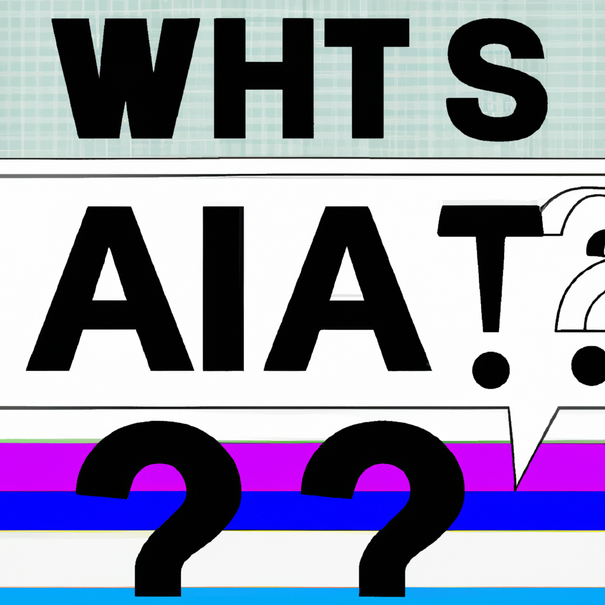

Why AI will never replace the Cloud Consultant
The debate around whether Artificial Intelligence (AI) will replace radiologists has been a hot topic in the medical world. The argument goes that AI, with its ability to quickly analyze large amounts of data and recognize patterns, will eventually be able to identify ailments in medical images with the same accuracy as a radiologist.
However, while AI may be able to detect anomalies in medical images faster and more accurately than a radiologist, it should never replace them. Radiologists are well-trained medical professionals who have the experience and knowledge to accurately interpret and diagnose an ailment. They are also able to empathize with patients and explain complex medical terms in a way that is understandable and reassuring.
In addition, AI technology is still in its infancy and has yet to be perfected. While it may be able to detect anomalies in medical images, it may not be able to accurately interpret them. In addition, AI algorithms are not able to account for a patient’s overall medical history, which is a key factor in accurately diagnosing an ailment.
Therefore, while AI may be able to supplement the work of radiologists, it will never be able to replace them. Radiologists are an essential part of the medical field and will continue to be for many years to come.